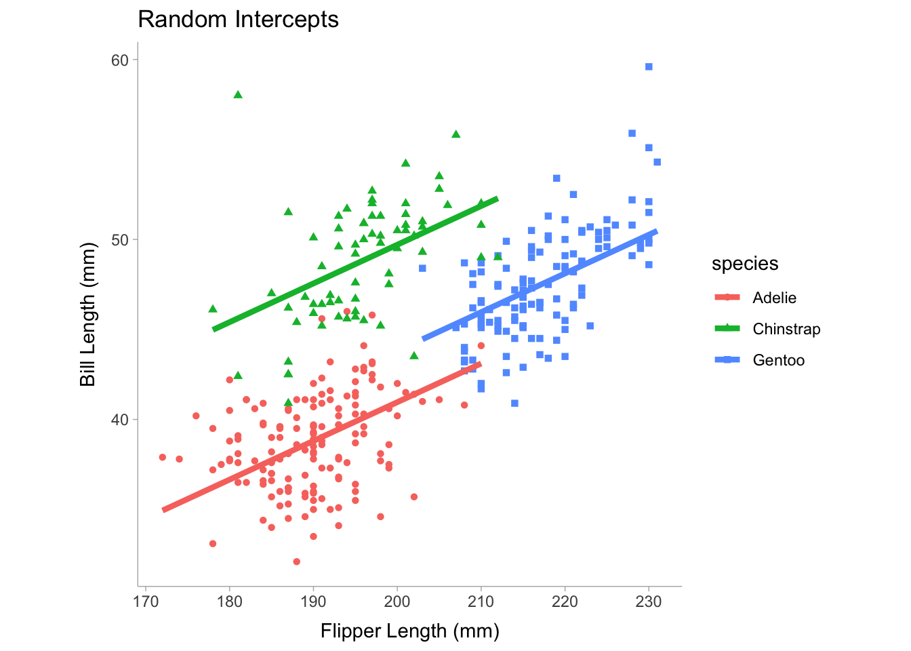

14 Regression
Regression is a method of predicting an outcome variable from one or more predictor variables.
14.1 Regression Overview
In a simple linear regression there is only one predictor (\(x\)) and one outcome (\(y\)) in the regression model,
\[ y = b_0 + b_1 x + e \]
We can visualize this model by showing data from the palmer penguins data package:
where \(b_0\) is the intercept coefficient, \(b_1\) is the slope coefficient, and \(e\) is the error term that is normally distributed with a mean of zero and a variance of \(\sigma^2\). For a simple linear regression we can obtain an unstandardized regression coefficient by finding the optimal value of \(b_0\) and \(b_1\) that minimizes the variance in \(e\), namely, \(\sigma^2\). In a multiple regression we can model \(y\) as a function of multiple predictor variables such that,
\[ y = b_0 + b_1 x_{1} + b_2 x_{2} +... + e \] Where the coefficients are all optimized jointly to minimize the error variance. The line produced by the regression equation is our predicted values of \(y_i\), however it can also be interpreted as the mean of \(y\) given some value of \(x\). In a regression equation we can construct more complex models that include non-linear terms such as interactions or polynomials (or any sort of function of \(x\)). For example, we can create a model where we include a main effect, \(x_1\), a quadratic polynomial term, \(x^2_1\) and an interaction term, \(x_1 x_2\),
\[ y_i = b_0 + b_1 x_{1} + b_2 x^2_{2} + b_2 x_{1} x_{2} + e_i \]
14.2 Effect Sizes for a Linear Regression
If we want to calculate the variance explained in the outcome by all the predictor variables, we can compute an \(R^2\) value. The \(R^2\) value can be interpreted one of two ways:
- the variance in \(y\) explained by the predictor variables
- the square of the correlation between predicted \(y\) values and observed (actual) \(y\) values
Likewise we can also take the square root of \(R^2\) to get the correlation between predicted and observed \(y\) values. We can construct an linear regression model quite easily in base R using the lm() function. We will use the palmerpenguins dataset for our example.
library(palmerpenguins)
mdl <- lm(bill_length_mm ~ flipper_length_mm + bill_depth_mm,
data = penguins)
summary(mdl)
Call:
lm(formula = bill_length_mm ~ flipper_length_mm + bill_depth_mm,
data = penguins)
Residuals:
Min 1Q Median 3Q Max
-10.8831 -2.7734 -0.3268 2.3128 19.7630
Coefficients:
Estimate Std. Error t value Pr(>|t|)
(Intercept) -28.14701 5.51435 -5.104 5.54e-07 ***
flipper_length_mm 0.30569 0.01902 16.073 < 2e-16 ***
bill_depth_mm 0.62103 0.13543 4.586 6.38e-06 ***
---
Signif. codes: 0 '***' 0.001 '**' 0.01 '*' 0.05 '.' 0.1 ' ' 1
Residual standard error: 4.009 on 339 degrees of freedom
(2 observations deleted due to missingness)
Multiple R-squared: 0.4638, Adjusted R-squared: 0.4607
F-statistic: 146.6 on 2 and 339 DF, p-value: < 2.2e-16We will notice that the linear regression summary returns two \(R^2\) values. The first one is the traditional \(R^2\) and the other is the adjusted \(R^2\). The adjusted \(R^2_\text{adj}\) applies a correction factor since \(R^2\) it is often bias when there are more predictor variables and a smaller sample size. If we want to know the contribution for each term in the regression model, we can also use semi-partial \(sr^2\) values that are similar to partial eta-squared in the ANOVA section of this book. In R, we can calculate \(sr^2\) with the r2_semipartial() function in the effectsize package (Ben-Shachar, Lüdecke, and Makowski 2020):
library(effectsize)
r2_semipartial(mdl,alternative = "two.sided")Term | sr2 | 95% CI
---------------------------------------
flipper_length_mm | 0.41 | [0.33, 0.49]
bill_depth_mm | 0.03 | [0.01, 0.06]A standardized effect size for each term could also be calculated from standardizing the regression coefficients. Standardized regression coefficients are calculated by re-scaling the predictor and outcome variables to be z-scores (i.e., setting the mean and variance to be zero and one, respectively).
stand_mdl <- lm(scale(bill_length_mm) ~ scale(flipper_length_mm) + scale(bill_depth_mm),
data = penguins)
summary(stand_mdl)
Call:
lm(formula = scale(bill_length_mm) ~ scale(flipper_length_mm) +
scale(bill_depth_mm), data = penguins)
Residuals:
Min 1Q Median 3Q Max
-1.9934 -0.5080 -0.0599 0.4236 3.6199
Coefficients:
Estimate Std. Error t value Pr(>|t|)
(Intercept) -2.328e-15 3.971e-02 0.000 1
scale(flipper_length_mm) 7.873e-01 4.899e-02 16.073 < 2e-16 ***
scale(bill_depth_mm) 2.246e-01 4.899e-02 4.586 6.38e-06 ***
---
Signif. codes: 0 '***' 0.001 '**' 0.01 '*' 0.05 '.' 0.1 ' ' 1
Residual standard error: 0.7344 on 339 degrees of freedom
(2 observations deleted due to missingness)
Multiple R-squared: 0.4638, Adjusted R-squared: 0.4607
F-statistic: 146.6 on 2 and 339 DF, p-value: < 2.2e-16Alternatively, we can use the standardise function in the effectsize package:
standardise(mdl)
Call:
lm(formula = bill_length_mm ~ flipper_length_mm + bill_depth_mm,
data = data_std)
Coefficients:
(Intercept) flipper_length_mm bill_depth_mm
4.335e-16 7.873e-01 2.246e-01 14.3 Pearson correlation vs regression coefficients in simple linear regressions
A slope coefficient in a simple linear regression model can be defined as the covariance between predictor \(x\) and outcome \(y\) divided by the variance in \(x\),
\[ b_1 = \frac{\text{Cov}(x,y)}{S_x^2} \]
Where \(S_x\) is the standard deviation of \(x\) (the square of the standard deviation is the variance). A Pearson correlation is defined as,
\[ r = \frac{\text{Cov}(x,y)}{S_xS_y} \]
We can see that these formulas are quite similar, in fact we can express \(r\) as a function of \(b_1\) such that,
\[ r = b_1 \frac{S_x}{S_y} \]
Which means that if \(S_x=S_y\) then \(r = b_1\). Furthermore, if the regression coefficient is standardized this would make the outcome and predictor variable to both have a variance of 1, thus making \(S_x=S_y = 1\). Therefore a standardized regression coefficient is equal to a pearson correlation.
14.4 Multi-Level Regression models
We can allow the regression coefficients such as the intercept and slope to vary randomly with respect to some grouping variable. For example, lets say we think that the intercept will vary between the different species of penguins when we look at the relationship between body mass and bill depth. Using the lme4 package in R, we can construct a model that allows the intercept coefficient to vary between species.
library(palmerpenguins)
library(lme4)
ml_mdl <- lmer(bill_length_mm ~ 1 + flipper_length_mm + (1 | species),
data = penguins)
summary(ml_mdl)Linear mixed model fit by REML ['lmerMod']
Formula: bill_length_mm ~ 1 + flipper_length_mm + (1 | species)
Data: penguins
REML criterion at convergence: 1640.6
Scaled residuals:
Min 1Q Median 3Q Max
-2.5568 -0.6666 0.0109 0.7020 4.7678
Random effects:
Groups Name Variance Std.Dev.
species (Intercept) 20.06 4.479
Residual 6.74 2.596
Number of obs: 342, groups: species, 3
Fixed effects:
Estimate Std. Error t value
(Intercept) 1.81165 4.97514 0.364
flipper_length_mm 0.21507 0.02113 10.177
Correlation of Fixed Effects:
(Intr)
flppr_lngt_ -0.854Note in the table that we have random effects and fixed effects. The random effects shows the grouping (categorical) variable that the parameter is allowed to vary on and then it shows the parameter that is varying, which in our case is the intercept coefficient. It also includes the variance of the intercept, which is the extent to which the intercept varies between species. For the fixed effect terms, we see the intercept displayed as well as the slope, this shows the mean of the intercept across species and, since the slope is equal across species, the slope is just a single value. Let’s visualize how this model looks:

Notice that in the plot above the slopes are fixed and equal between each species and only the intercepts (i.e., the vertical height of each line) differs. We can also allow the slope to vary if we may choose by editing the formula:
library(palmerpenguins)
library(lme4)
ml_mdl <- lmer(bill_length_mm ~ 1 + flipper_length_mm + (1 + flipper_length_mm | species),
data = penguins)Warning in checkConv(attr(opt, "derivs"), opt$par, ctrl = control$checkConv, :
unable to evaluate scaled gradientWarning in checkConv(attr(opt, "derivs"), opt$par, ctrl = control$checkConv, :
Model failed to converge: degenerate Hessian with 1 negative eigenvaluessummary(ml_mdl)Linear mixed model fit by REML ['lmerMod']
Formula: bill_length_mm ~ 1 + flipper_length_mm + (1 + flipper_length_mm |
species)
Data: penguins
REML criterion at convergence: 1638.2
Scaled residuals:
Min 1Q Median 3Q Max
-2.6326 -0.6657 0.0083 0.6843 4.9531
Random effects:
Groups Name Variance Std.Dev. Corr
species (Intercept) 3.0062118 1.73384
flipper_length_mm 0.0007402 0.02721 -0.61
Residual 6.6886861 2.58625
Number of obs: 342, groups: species, 3
Fixed effects:
Estimate Std. Error t value
(Intercept) 1.56035 4.32870 0.360
flipper_length_mm 0.21609 0.02623 8.237
Correlation of Fixed Effects:
(Intr)
flppr_lngt_ -0.863
optimizer (nloptwrap) convergence code: 0 (OK)
unable to evaluate scaled gradient
Model failed to converge: degenerate Hessian with 1 negative eigenvaluesVarying the slope will include flipper_length_mm in the random effects terms. Also note that the summary returns the correlation between random effect terms, which may be useful to know if there is a strong relationship between the intercept and slope across species. Now we see that the random effects terms now include the slope coefficient corresponding to the flipper_length_mm predictor variable. Let’s visualize
The plot above shows slight variation in the slope between the three species, however the slope does not vary all that much. For multi-level models we can compute a conditional \(R^2\) and a marginal \(R^2\) which are each described below
- Marginal \(R^2\): the variance explained solely by the fixed effects
- Conditional \(R^2\): the variance explained in the whole model, including both the fixed effects and random effects terms.
In R, we can use the MuMIn package (Bartoń 2023) to compute both the marginal and conditional \(R^2\):
library(MuMIn)
r.squaredGLMM(ml_mdl) R2m R2c
[1,] 0.2470201 0.8210591